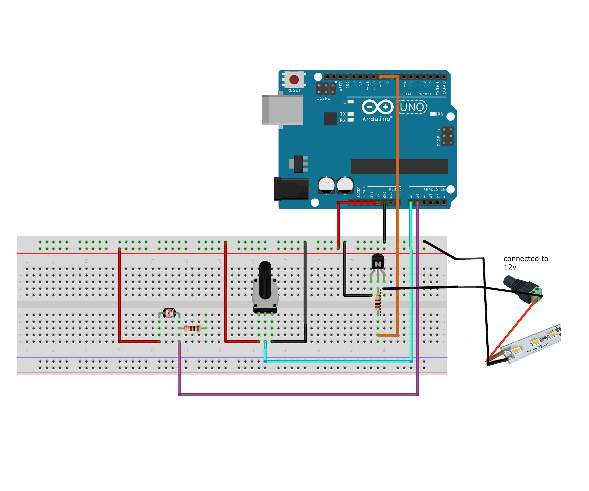
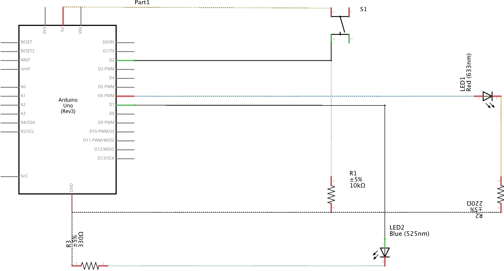
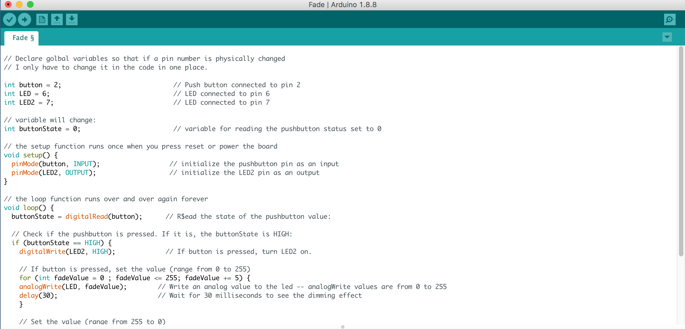
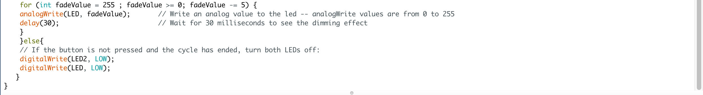

Assignment 2!
Circuit
Schematic
To build the circuit, I used:
- 1 push button
- 1 10k Ω resisto
- 1 330 Ω resistor
- 1 red LED
- 9V battery
- Arduino board
- some wire
- 2 alligator clips (for the heart)
Why add a resistor when using a push button?
It turns out there is electromagnetic interference (EMI) generated by external forces all around us.
EMI makes it hard to get a consistent value reading from the pins. This is known as floating pins.
If we were to connect a push button to a pin on the Arduino board without a resistor, we would get
random readings when the push button is left unpressed.
There are two ways of connecting the resistor:
- Pull-up
- Pull-down
I get a reading of zero and when it’s pressed I get a reading of 1. The reason that happens is electricity likes
to travel the path with the least resistance, meaning when the circuit is complete the electrons would encounter
the resistor and chose to go the other path giving me a reading of 1.
Code

Fading in action

Making it a little more interesting...
I cut an acrylic sheet in the shape of a heart using a laser cutter. I taped a red LED to one side.
I connected the positive leg of the LED to pin 6 and the negative leg to the 320 Ω resistor.
The value of the resistor was determined by using Ohm’s law.
Now when I press the button the heart fades on and then off untill the button is pressed again.